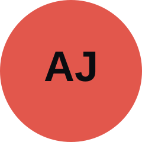

One dark window into every ride on the road. Helping UT students compare Uber, Lyft, Fetii, and robotaxi options before they book, not after they've opened three apps.
Whether that comparison runs on live prices depends on data access we have not confirmed yet. See Scope for the open risk and the fallback plan.
Build/organize website, add team information, write team expectations/covenants and grounds for expulsion, create a reusable Critique/Feedback section.
Define the target customer, write the problem statement, identify key pain points, articulate the core user insight and design opportunity.

Map stakeholders and their goals/worries, define what's in and out of scope, flag the project's main risk.
Draft the solution direction, plan the interview and diary research, run the trip-timing test, define pivot criteria.
Long-term, this is for college students and young adults in urban areas generally. Right now, we are narrowing to Austin and UT students specifically. That's who we're interviewing and designing the first version for.
Our primary customers are college students and young adults in urban areas who regularly rely on rideshare services but do not have a strong preference for one provider. They are comfortable using multiple transportation apps, including Uber, Lyft, Fetii, and newer autonomous ride options, and their choice often depends on what makes the most sense for a particular trip.
A useful example: a college student trying to get from campus to the airport. They may be willing to take whichever reliable service offers the best combination of price and arrival time, rather than automatically choosing Uber or Lyft.
As rideshare becomes more fragmented across traditional rideshare companies, group transportation services, and autonomous vehicles, customers are increasingly responsible for figuring out which service is best for each individual trip.
Currently, much of that comparison happens manually. A rider opens one app, enters the destination, remembers the quoted fare and wait time, switches to another app, enters or confirms the same trip, compares the results, and potentially repeats the process with additional providers. By the time the rider makes a decision, some of that information may already have changed. So the customer needs a better way to compare ride details across multiple platforms more efficiently.
Users open multiple apps, enter the same destination, and compare prices and wait times manually. Because fares and availability change quickly, the information they compare may already be outdated by the time they choose.
Users weigh more than cost. A slightly more expensive ride may be worth it if it arrives significantly faster, and group size, urgency, and reliability all affect which option provides the best value.
Most riders only check the services they already use. As options expand beyond Uber and Lyft to services like Fetii and robotaxis, users may miss a cheaper or more convenient option simply because they don't know to check it.
Rideshare users make these decisions repeatedly, so small differences in price, wait time, and convenience add up over time. Having more transportation services should give riders more choice, but that benefit is limited when the information is scattered across separate apps.
Users currently have to choose between spending extra time comparing rides or choosing quickly and potentially paying more or waiting longer. Making that comparison easier would help riders make faster, more informed transportation decisions while also making newer or less familiar services easier to discover.
Riders are not loyal to the process of booking a ride. They are trying to accomplish a larger task: getting somewhere with the least acceptable combination of cost, waiting, uncertainty, and effort.
This distinction matters for our project. Instead of treating the customer as an "Uber user" or "Lyft user," we treat them as a transportation shopper whose preferred provider can change from trip to trip.
The opportunity is to reduce the effort required for users to identify the transportation option that best fits their needs.
Our research should investigate how riders currently make this decision, what information they actually compare, when they decide further comparison is no longer worth the effort, and which factors beyond price influence their final choice.
We want to help UT students compare their ride options in one place before they book. Right now that means opening Uber, then Lyft, then maybe Fetii, checking three price screens and three wait times, and picking whatever seems least bad. We are exploring what it looks like to do that once instead of three times.
We are not committing to a format yet. It could be an app, a web tool, a browser extension, or something that lives inside a group chat while people are deciding. That should come out of research.
Austin has more ride options than most cities, and they do not live in the same place. Waymo rides appear inside the Uber app. Tesla's robotaxi needs its own app, only runs in part of the city, and currently stops service around 10 PM. Fetii is separate again, and is what people default to for groups. A student getting from West Campus to Rainey at 11 PM on a Friday is comparing across apps that were never built to be compared.
Cost matters more for this group than it would for a general audience. Students are price sensitive, and a lot of these trips get split four or five ways, which changes which option actually wins.
Uber vs. Lyft price comparison tools have been around for years and mostly did not stick. Part of our research is figuring out why. My guess is they only covered two services, the prices went stale fast, and you still had to leave the tool to book. Worth confirming instead of assuming.
Six to eight short interviews with UT students who take rides at least a couple times a week. Mix of people living in West Campus and people commuting in from farther out.
On top of interviews, a short diary exercise: ask a few people to send screenshots of their last five rides with the price and a line on how they chose. People are bad at remembering what they actually paid.
We should also book the same trip four ways ourselves and time how long comparing takes. If it turns out to be thirty seconds, the problem is weaker than we think, and we want to know that early.
If interviews show students are loyal to one app and rarely compare, then comparison is not the problem. In that case we would pivot toward group splitting or late-night reliability.
In Holtzblatt, Wendell, and Wood's terms, this is a market characterization project for a new system concept, not a usability fix or a redesign of something that already exists. That is why this milestone is research and scope rather than screens: the job right now is finding out whether the concept holds up before we design toward it.
If we cannot get price data legitimately, a comparison tool cannot exist in the form we are imagining. Worth settling in the first two weeks. The workarounds are letting users enter what they are already seeing, or shifting focus from live prices to the decision and the split. We would rather name this now than design six weeks of screens around a feature that cannot exist, and the rest of the site should carry the same caveat so our pitch does not promise something our own risk section rules out.
Getting somewhere at a reasonable price without opening three apps first.
Overpaying because they checked the wrong app, waiting longer than expected at night, and fronting money for a group they then have to collect from.
Most already have one, like always checking Uber first or defaulting to Fetii above a certain group size. Surfacing those is a research goal, since a tool that fights how people already decide will not get used.
Interviews and the diary exercise now; prototype testing later with the same people we interviewed.
Tell participants what we did with what they told us in those sessions. It doubles as a check on whether we understood them correctly.
They talk in specifics, not generalities. "Walk me through your last ride" beats "what do you look for in a rideshare app." Same for design: a screen they can react to, not a description of a system.
Within this group, the person who ends up booking for four or five people is worth calling out separately. They are deciding fast with people waiting on them, and they are out of pocket until everyone pays them back. If research says the money and the coordination hurt more than the comparison does, they become the center of the project rather than a subset of it.
Stakeholders we are affected by but do not work with.
Keep riders inside their own app.
A tool that lines their price up against a cheaper option is against their interest.
None to contribute, since we are not in contact with them.
We are not in contact with them, so there is no progress to report.
If we ever needed to, it would be through whatever public terms of service they publish, not a conversation.
We should not plan around cooperation we will not get.
Context rather than a partner right now.
Already care about students getting home safely at night.
A tool that pulls students away from services the university funds.
Only if the project drifts toward late-night reliability.
If it happens, a short written request, with progress reported the same way.
None of these points apply at this scope.
Steady fares.
Demand moving between platforms.
Affected by anything that shifts demand between platforms, but not who we are serving. Saying that plainly is better than claiming to serve everyone.
We do not involve them, report to them, or design for them.
Seeing us apply the method.
A team that ignores feedback.
The milestone critiques.
Through the site itself.
Presented work plus a written response to what they said.
Escalation runs in three steps: raise it in the chat, then talk as a group about reassigning work, then notify the instructor in writing.
Expulsion requires a unanimous vote of the remaining members and written notice to the instructor. The person gets to state their side first.
Two people take notes at each critique, one on substance and one on who said what. Within 48 hours it goes on the site with three parts: the critique, what we did about it, and if we did not act, why. Critiques we disagreed with still get listed. The person who owned the section writes the response, and the write-up role rotates.
Repeatable template: duplicate the block below for every milestone, present it in class, then fill in the critique summary within 48 hours.
Team, target customer, problem statement, a solution direction plus research plan for helping UT students compare Uber, Lyft, Fetii, and robotaxi options for the same trip, project scope, stakeholder analysis, and group covenants.
[What the team will change/investigate before the next milestone based on the above]
Submit it on the Critiques page. Once we have reviewed it, we will publish the write-up here as Milestone 02, following the same three-part format as the example above.
Go to Critiques